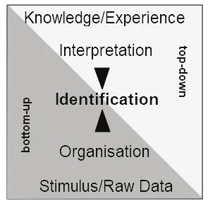
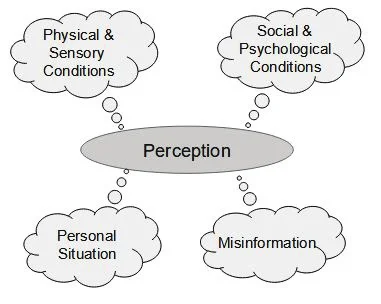
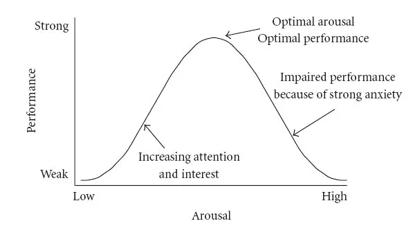
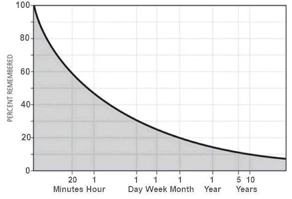
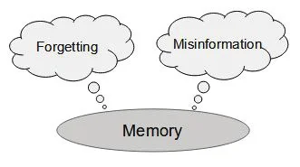
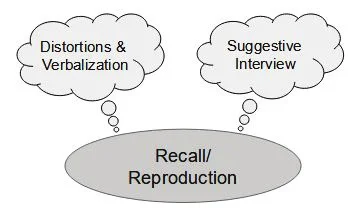
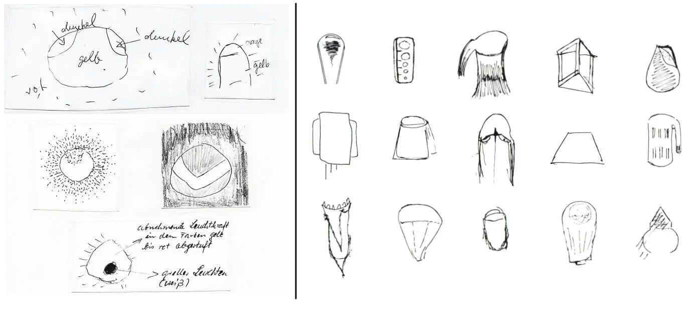

The question is not whether a memory is false, but how false it is. Dr. Julia Shaw
Eyewitness reports of observations of UFOs are still the central argument in all discussions of a possible anomalous background to unexplained UFO sightings. Researchers often assign a very high level of relevance and reliability to statements from obviously credible eyewitnesses talking about their personal experiences. As a result, conclusions are drawn from their descriptions that are regarded as information on objective processes and properties of the observed phenomena and objects. This happens without taking into account the subjectivity of witness statements.
The following paper focuses on the susceptibility to error of witness statements and highlights the diverse physiological and, above all, psychological influences on the entire memory process which consists of perception, memory and recall. Perception and memory, which are largely based on the respective knowledge and experience, and thus its individuality and temporality, are emphasized. In addition, the way a witness interview is conducted also holds a potential for error with regard to the information obtained. The cognitive interview is then described as a tool for obtaining good-quality memories. Nevertheless, it is extremely problematic, if not impossible, to draw scientific conclusions about the UFO phenomenon from findings obtained purely by testimony. They require objectively verifiable data.
In anomalistics, the UFO phenomenon is primarily classed as an extraordinary human experience, i.e., a (predominantly) subjectively experienced and conveyed experience Gesellschaft für Anomalistik: Profile of the Journal of Anomalistics, n.d., accessed . While the modern UFO phenomenon is also characterized by a huge number of photos and videos, especially since the advent of digital photography, these have come under strong criticism in terms of credibility and authenticity. They often show conventional objects and are based on optical effects or do not allow exact conclusions because they lack detail or are of poor quality. This is why eyewitness testimony and its assessment is still the central element in all discussions about the origins of the phenomenon.
This can also be seen, for example, in the officially verified photos and videos of the US Navy, which have been hotly debated in UFO circles since . According to some researchers, they show extraordinary vehicles of non-terrestrial origin. However, these images are also subject to criticism because there are possible conventional stimuli which call into question unusual claims Metabunk Forum: UFO Videos and Reports from the US Navy, , accessed . In the current discussion representatives of exotic hypotheses are increasingly referring to the statements of US Navy pilots and military personnel – so, again, personal accounts have to serve as evidence of the non-terrestrial origin of these flying objects. An example of this is the Scientific Coalition of UAP Studies’ (SCU) analysis of the Nimitz Tic Tac video Scientific Coalition of UAP Studies: 2004 USS Nimitz Navy Strike Group Incident Report, , updated , accessed . According to its own statements, it is impossible to derive object data such as size or distance from the footage, and assumptions and estimates based on eyewitness accounts were taken as the basis for the objective calculation of unusual behavior. Here, as in various other reports, proponents emphasize the assumed high quality and credibility of the testimony of the witnesses involved (pilots and other military-technical personnel) CBS News, “60 Minutes Overtime”: Navy Pilots Recall ‘Unsettling’ 2004 UAP Sighting [Online], , accessed .
In the state-of-the-art evaluation of eyewitness reports, the focus is not on the general credibility of the person but on the credibility of the testimony in question, its accuracy, and reliability. This must be evaluated independently of the reputation or the general credibility of a person, which can only hint at a credible testimony Ludewig, R., D. Tavor, and S. Baumer: “Wie können aussagepsychologische Erkenntnisse Richtern, Staatsanwälten und Anwälten helfen?” AJP/PJA, 11, p. 1418, . In addition, many factors can encourage false testimonies, be it a deliberate lie, an error, or suggestion. Since fallacy is more widespread than conscious lying (which also applies to eyewitness accounts of UFO sightings), this paper will present relevant influences on all three stages of the memory process (perception, memory, recall) that affect memory capacity and can cause errors, and its implications for UFO case investigations Ludewig, R., D. Tavor, and S. Baumer: “Wie können aussagepsychologische Erkenntnisse Richtern, Staatsanwälten und Anwälten helfen?” AJP/PJA, 11, pp. 1418-1419, .
Perception can be defined as a process by which sensory stimuli from the environment are received, organized, and interpreted. This identification process is often referred to as chain of perception. However, the representation of perception as a step-by-step, linear sequence of stages is increasingly regarded unlikely today since the actual perception process is far more complex. Rather, perception is increasingly seen as the result of several interactive processes. A model describes it as a bottom-up process with the transmission of stimuli and their organization (generating patterns and encoding) on the one hand; and on the other hand, as a top-down process in which interpretation and identification of the organized stimuli take place (see Fig. 1). The latter may essentially be called “an educated guess.” The interrelationship between bottom-up and top-down processes ultimately leads to perception in the sense of recognition (identification and meaning) Bak, P. M.: Wahrnehmung, Gedächtnis, Sprache, Denken, Berlin: Springer, pp. 17-19, . This presumes that we have assumptions about the world and the objects in it. Without such assumptions, there can be no cognition in the sense of identifying and giving meaning. If the necessary presence of knowledge, experience, and expectation is decisive for the perception process, it is clear that the result of conscious perception is not an objective image of reality, but always an individual and subjective one. It is influenced by external and internal parameters Bak, P. M.: Wahrnehmung, Gedächtnis, Sprache, Denken, Berlin: Springer, pp. 21-22, .

In perception, the following parameters that influence the perception of event information can be identified (see Fig. 2 below):
Physical and sensory conditions. These include the external conditions under which the perception takes place, such as spatial and temporal conditions (visual conditions, observer position, movement situation), e.g., whether the observation takes place outdoors, through a window, with auxiliary means, in motion, or in a stationary position. These points are usually the subject of an additional survey or questionnaire, and they are collected and taken into account for further assessment. A common factor is the age of the witness. For example, advancing age leads to physiological changes in perceptual abilities (this already tends to be noted from the age of 40 years). Examples are the decreasing depth of field in the eye, restrictions in peripheral perception, and changes in color perception or night vision problems Chaloupka, C., R. Fous, R. Risser, & U. Lehner: Erhöhung der Sicherheit der Seniorinnen und Senioren im Straßenverkehr, Study by order of the Austrian BMVIT, .
Social and psychological conditions, which include perception differences based on expectation and experience. Shape and pattern perception is also determined by this factor. Of particular interest here are descriptions of flying objects in the dark. Object shapes are often described by an interpretation of the visual distribution of individual lights. Typical examples are “flying triangles,” which are interpreted based only on the arrangement of lights. Several lights are regarded as belonging to the same object, whose form they define. This is a completely normal process that is defined by the “laws of gestalt” Domnik, I.: Probleme sehen – Ansichtssache: Wahrnehmung von kartographischen Darstellungen als visuelle Kommunikationsmittel in der Entwicklungszusammenarbeit, Department of Geosciences of the Freie Universität Berlin. Berlin: Freie Universität, Dissertation, p. 20, . The brain forms a shape from the lights perceived – yet this does not have to correspond to the true shape or the true object. As soon as the brain recognizes a definite form of the flying object it is also perceives and describes it in this imagined form.
It has been mentioned that the knowledge and experiences at the time of the event are an essential part of its perception and will differ from observer to observer. Personal ideas and convictions also play their role. Of particular interest is the so-called priming effect, whereby one’s expectations or even previous experiences can influence the perception in a very special way (it is therefore also referred to as the expectation effect) Stangl, W.: Priming, Online Encyclopedia for Psychology and Pedagogy, , accessed Ludewig, R., D. Tavor, and S. Baumer: “Wie können aussagepsychologische Erkenntnisse Richtern, Staatsanwälten und Anwälten helfen?” AJP/PJA, 11, p. 1418, . In the case of extraordinary human experiences, this effect must not be underestimated. Most people hold a set of certain expectations and beliefs regarding the phenomena, or may already have made strange observations. The possible impact of this effect was illustrated in a TV documentary on the myth of Bigfoot – witnesses believed they had observed a Bigfoot and described such an animal, but traces and material found on the encounter site were identified as those of ordinary animals. The documentary also discussed gestalt perception in this context Pupp, M., and S. Taplin (Directors): The Missing Evidence - Bigfoot [Film], UK, Blink Films, . Researchers attempt to assess to what extent such beliefs or experiences are present in observers by trying to find out about their previous interest in UFOs. One problem here is the fact that such images have for long already become part of pop culture; even children are exposed to many motifs of the subject of UFOs and aliens. So, everybody will ultimately have his ideas about this topic.
Allocation and focus of attention. Was the observation deliberate or rather random and on the periphery? Was the witness able to devote his full attention to the event and how long did the observation last? Or was the witness busy with something else? As a spontaneous phenomenon the witness generally encounters UFOs unprepared and only by chance (unless they especially go to a place to make observations, such as happens in the case of the Hessdalen lights). The witness has only a little time to interpret something in the sky as an unknown phenomenon, and then to focus on its observation. Reported UFO observations with a very short duration, or incidental ones, are often difficult to assess unless there are specific indications. American astronomer Allan Hendry, who once was a UFO researcher, suggested the category “insufficient observation” for such cases, as a sub-category of “exceptions,” observations that for various reasons cannot be sensibly assessed .
The personal situation (emotional situation) in which the witness is at the time of the observation. Was he or she relaxed, stressed, excited or angry, tired or wide awake, or did the event itself lead to particular emotional states in the witness? Such personal emotional states can make it difficult to record the entire event accurately and above all objectively and soberly. This is an often-neglected or underappreciated point which is hardly ever considered in questionnaires on sightings and is only rarely asked if the witness does not spontaneously speak of his or her own situation. This is of particular interest for night sightings – did the witness come from a party, from a club, or was he or she on the way to or from work, etc.

Experiments have shown that, in addition to interest and attention, a certain amount of arousal is necessary for good perception. If it is at an optimal level, it offers a good basis. However, if the level of arousal is too weak or too strong, it leads to a significant deterioration in perception skills (model of the inverted U-curve according to the Yerkes-Dodson law [see Fig. 3]) Shaw, J.: The Memory Illusion, Remembering, Forgetting, and the Science of False Memory [E-Book], London: Random House Books, Ch. 2. Dirty Memories, .

This means, for example, that if an observational experience that is unusual for the witness leads to very strong emotional excitement or a stressful situation, these emotions increasingly impair perceptual performance. The effect of stress on eyewitness recall is widely underrated in its effects. Studies have consistently shown that stress has a dramatically negative impact on the accuracy of eyewitness memory, a phenomenon that witnesses themselves often do not take into account Shaw, J.: The Memory Illusion, Remembering, Forgetting, and the Science of False Memory [E-Book], London: Random House Books, Ch. 7. Highly Emotional, . Particularly when a threat is being felt (sensation of fear), the focus of perception narrows and concentrates on the perceived threat. Peripheral details and contextual information become unclear or will be badly perceived Shaw, J.: The Memory Illusion, Remembering, Forgetting, and the Science of False Memory [E-Book], London: Random House Books, Ch. 2. Dirty Memories, Greuel, L., et al.: Glaubhaftigkeit der Zeugenaussage, Weinheim, Germany: Beltz/Psychologie Verlags Union, p. 32, . In a UFO observation under high stress, central details of high priority may stand out, while accompanying details of low priority, which can be just as important for an assessment, are not or only inadequately observed. Witnesses often remark on a personal stressful situation on their own initiative or describe their feelings during the observation. As a case investigator, we should take this into account and document it when we make systematic inquiries.
Perceptions are not stored unalterably in memory, but they are also subject to influences. The main factor here is time. The more time passes between the event and the interview situation, the greater the risk of changes in the original perception. Such changes can occur within the space of days after the observation. There are two influencing parameters (see Fig. 5 below):
Forgetting. Forgetting is a normal process to which most memories are subject to a larger or lesser degree. From various studies on forgetting, a so-called forgetting curve has been derived, which, however, is not linear over the years and varies in intensity depending on the type of information absorbed or the event. Thus, autobiographical or important personal events are remembered even after several years, while those with little or no personal significance are subject to high memory loss. This already happens after just hours and continues asymptotically until it begins to level off the following days at a dramatically reduced level of accuracy Ludewig, R., D. Tavor, and S. Baumer: “Wie können aussagepsychologische Erkenntnisse Richtern, Staatsanwälten und Anwälten helfen?” AJP/PJA, 11, p. 1419, fn. 39, , As the years go by, the forgetting curve continues to slow down (see Fig. 4). Eyewitness memory is increasingly susceptible to contamination as time passes. When memories fade, they also become more susceptible to suggestion Gerrie, M. P., et al.: “False Memories,” in N. Brewer & K. D. Williams (eds.), Psychology and Law: An Empirical Perspective. New York: The Guilford Press, pp. 222-253, . Childhood memories of an adult should be evaluated particularly carefully.

At the moment, there is no definitive answer to the question of whether forgotten information is really completely erased or can simply no longer be accessed, for whatever reason. In addition, depending on the situation, there will always be occasions when you will not be able to recall everything that you knew only shortly before or what comes back to your mind later. This situation may happen during a witness interview. The brain will try to fill such gaps in memory by itself on the basis of expectations and stereotypes. The problem is that it cannot be determined in a single interview whether a memory was authentic or only retrospectively inserted by the brain, since it is an unconscious process and the false fill-in is recalled by the witness as a real memory. Only intentional false statements may later be determined on the basis of certain facts.
Suggestive influence (misinformation). Subsequent information obtained by witnesses after the actual event can distort and alter their memory. This so-called misinformation effect is caused, for example, by conversations and exchanges of ideas with other people or witnesses or by media information Greuel, L., et al.: Glaubhaftigkeit der Zeugenaussage, Weinheim, Germany: Beltz/Psychologie Verlags Union, p. 33, . The effect must especially be considered in the case of UFO sightings, since phenomena unknown to an observer cannot be calibrated on known objects and the observers may think about their experience, search for possible analogies, and interpret their observation. In a later interview, details may be described that were not originally observed, because they are interpretations or adaptions based on subsequently acquired information. This change in one’s memory occurs unconsciously, so that the witnesses believe they are telling the truth. In the case of several interacting witnesses to an event, mutual influence often leads to memory conformity. This means that the memory of a single witness in a group will not only reflect his own memories, but after their exchange, consists of memories of all participating witnesses. In this process, the memory of the individual group members tends to adjust to a common narrative Gabbert, F., et al.: “Memory Conformity between Eyewitnesses,” Court Review, 48(1-2), pp. 36-43, .
Researchers attribute great importance to media influence during waves of UFO sighting. Additional witnesses may interpret their sighting according in the context of the information they read about and then report a sighting (social contagion) Abrassart, J.-M.: The Beginning of the Belgian UFO Wave, SUNlite, 2(6), pp. 21-23, , accessed . Media influence on subsequent testimony should not be underestimated. It must also be allowed for in the currently debated observations by US Navy pilots. Their observations have now been reported for four years in various media, and these reports advocate very different views and different interpretations and assumptions. The witnesses compare them with their own perceptions; and in doing so may be influenced. In addition, we have a long period of time that has passed since the Nimitz incident in [Editor’s note] The Nimitz incident took place in , not in , as the author’s own sources say (the title of the SCU report and of the CBS interview) ., and this must also be taken into account. It would be of more use to consult any existing protocols that were made immediately after the events.

A timely interview and exploration of a UFO observation is therefore of crucial importance in order to minimize the influences mentioned and to obtain good-quality statements. Contrarily, increased periods of time between observation and interview must be critically assessed. My own experience from case discussions with fellow researchers shows that this is not always the case. This aspect often only comes into the researcher’s mind when we are faced with insufficient data from sightings from long ago, where a meaningful investigation can no longer be carried out. When a long period of time has passed since the event, especially if the witnesses are regarded as reliable, the problem is hardly ever discussed.
All things considered – and remembering that memories can change within days – I would suggest an additional evaluation scale for sighting reports which measures the time that has passed since the event. For the highest quality the interview should take place within a few days after the event, ideally on the same day the event occurred, the second highest quality for interviews within a month and the third highest quality for interviews within a year. Interviews on sightings that happened more than a year ago would receive the lowest quality. I would tend to classify the latter in a distinct sub-category as “exceptions” according to Hendry and not under UFOs in the sense of unidentified.
In the interview situation, witnesses are expected to recall and replay their memories of an event correctly and comprehensively. However, there are also influences that can affect the result, the final witness report. For this, again two major parameters can be described (see Fig. 6 below):
Reproduction by the witness, distortions in the reproduction by levelling (simplifying details), accentuation (emphasizing details, especially when stress is felt) or assimilation (changing and adjusting details) Balloff, R.: “Grundlagen von Klärung und Diagnostik bei sexuellem Missbrauch - Wahrnehmung, Gedächtnis, Erinnerung,” in W. Körner and A. Lenz (eds.), Sexueller Missbrauch, Band 1. Götttingen, Germany: Hogrefe, p. 111, . The witness’s verbalization and language skills also play a role in the description of the event. It is recommended that the interviewer uses what is known as active listening and pays attention not only to what is said, but also to how it is said. An audio recording of the interview is advisable in order to be able to later understand the situation if necessary.
Suggestive influences by the interviewer. In the interview situation, suggestive questions or question techniques can also lead to false information. For example, misleading questions can lead to witnesses reporting things that were not there in the first place Ludewig, R., D. Tavor, and S. Baumer: “Wie können aussagepsychologische Erkenntnisse Richtern, Staatsanwälten und Anwälten helfen?” AJP/PJA, 11, p. 1420, . This is why neutral and open questions must always be used. Even questions about details that are not well remembered because they were not given sufficient attention can lead to misinformation effects. While repeated and frequent interrogation on details may provide additional information, at the same time it will encourage false memory convictions. Witnesses tend to make their own assumptions in order to give an answer if they have no real memory of the detail asked.

There are strict limits to a subsequent evaluation of memories, as the event usually lies in the past and measures are therefore limited to the interview situation. Precisely for this reason, the witness interview is the central instrument for gaining information about the event and requires a methodical approach in order to obtain reliable and usable information for the assessment of the case Ickinger, J.: X-Faktor UFO-Zeuge: Methodik der Zeugenbefragung, , accessed . This is a weak point in UFO research because most interviewers are untrained in interview techniques and regard their interview simply as an everyday conversation. A witness interview of inferior quality can hardly be adjusted in retrospect. It may bring into question the entire case assessment.
The cognitive interview is a tried and tested measure for obtaining good-quality memories; studies show that it provides from 25% to 35% more correct memory content than standard interviews Erdfelder, E.: “Das Gedächtnis des Augenzeugen,” Report Psychologie, 28, p. 442, . This means that the witness mentally re-engages in the observation situation and reports everything that he or she recalls in a free-form report, even if the result appears incoherent and fragmentary. The interviewer stays in the background. The witness should have the opportunity to remember without time pressure and stress. The interviewer should create a relaxed interview situation, not push the witness or ask questions during this phase. Ideally, the interview is carried out personally with the witness and as a local appointment, i.e., at the location of the sighting. In this way, the witness is most likely to put him or herself in the emotional position of the experienced situation, which promotes memory. This is also the best way to observe any reaction of the witness.
Questions can be asked only after the free-form report has been completed. Now suggestive questioning techniques must be avoided. The investigator must keep his own assumptions or interpretations to himself, or he will lead answers in a desired direction. Only open-ended questions are to be used, and the witness is not given any answer options. Information about peripheral details of the event is also problematic, especially with regard to duration estimates. According to studies, there is a tendency to overestimate shorter events of less than 30 minutes (which are typical for UFO observations) Tobin, S., et.al.: “An Ecological Approach to Prospective and Retrospective Timing of Long Durations: A Study Involving Gamers,” PloS One, Volume 5, No. 2, E9271, .
Only after this exploratory first phase, the subsequent, detailed interview as well as the filling in of the usual questionnaire for case studies should be made. The partially given options in a questionnaire may influence the answers, as they are then tailored to the questions. The use of the free-form report and later of a detailed interview or questionnaire will result in a redundancy of information. This can be compared, and contradictions noted, if necessary. A free-form report is particularly important because of the resulting dynamics.
Typically, in data collection on UFO sightings, witnesses are asked to make a drawing of the observed object. Because they give a visual impression of what was seen, drawings add to purely verbal or written descriptions. In the final case evaluation and discussion of prosaic causes, significant weight is usually given to drawings, especially when they are compared with possible explanations. If the pros and cons of a stimulus identification as a conventional object are discussed, in addition to the overall shape individual details in a drawing are often used as justification, especially in so-called unexplained cases where a drawing does not correspond to the expected shape of a known object.
This approach, however, does not take into account the already-mentioned influences on perception and memory, which affect reproductions in
drawings just as much as in verbal descriptions. The content of memory is not an objective and unchangeable reality,
and drawings are not photographic reproductions of what is seen. Experiments by researchers show that drawings by
eyewitnesses are also quite individual. In these experiments, test groups were shown an image on a slide which the
participants were later asked to draw from memory. A well-known and illustrative example is the series of tests
conducted by the German UFO group GEP. Their results, at least in part, do not
necessarily point to the stimulus originally shown and the drawings also differ considerably, and it was stated that
verbal descriptions and sketches of objects are only ‘moderate’ in the majority. (...) A third to a maximum of
half is ‘usable’
(see Fig. 7) Keul, A.: “Auswertung des
GEP-CENAP-Wahrnehmungsexperiments 1988,” JUFOF, 30(3), pp. 81-86, . A comparable experiment exemplarily carried out by sociologist Edgar Wunder for the German TV station Pro7 confirmed the results: people who are confronted
with an ambiguous stimulus for a short time will include details in their drawings which do not really correspond to
the stimulus and cannot be assigned to it, even when these drawings are done only a few minutes afterwards Story House Productions: Galileo Mystery: UFOs – Sind sie wirklich gelandet?
[Film], Germany: Story House Productions & Pro7, . The same,
naturally, is the case with drawings made years after an event. In addition, drawings by eyewitnesses to sightings
that are later identified sometimes show significant deviations from the actual stimulus. Corresponding remarkable
cases were documented by the Italian UFO group CISU, for example in mass sightings of a stratospheric balloon and a meteor over Italy (see Fig. 7) Grassino, G. P.: “’Flap’ in
Piemonte,” UFO Rivista di Informazione Ufologica, 1(2), pp. 17-22, Toselli, P.: “Un Ordigno
Extraterrestre Sull’Italia?” UFO Rivista di Informazione Ufologica, 2(4), pp. 16-23, . These cases also show that with several (independent) witnesses in a
case, one and the same object will be depicted in many different ways.

Cases where drawings are given in addition to photos or videos can also be illustrative. I myself took part in case discussions with videos which showed, in one case, only a still light and, in the other case, an airborne airplane in the distance, while the descriptions and drawings had strongly divergent details which were not confirmed on the videos and in one case clearly deviated from an airplane. In both cases, the witnesses were convinced that they had seen something out of the ordinary. Finally, it seems likely that in the case of an unidentified, commonly known, conventional object that is perceived under unclear conditions and appears mysterious to the witness, a drawing is more likely not to correspond to the stimulus, since it would otherwise be obvious. The more one's own interpretations are incorporated, the more deviations must be expected. Drawings can thus be no more than an indication in the case evaluation and individual details should not be overrated, especially since another witness would probably draw the same object differently. As many UFO observations are made at night, the influence on shape perception should also be taken into account. The perceived shape will often correspond to the arrangement of lights in the sky; this is then reflected in the drawings and, among other factors, plays an important role in most of the sightings of flying triangles.
In general, I see many problems when investigators draw pictures to illustrate eyewitness accounts, even if done in close co-operation with them, as these are, in essence, the results of an interaction between investigator and witness and cannot be regarded as reproductions free from influence. However, studies show that pictures drawn by witnesses immediately after a sighting and before they talk or discuss it with others, are quite valuable, and enhance memory performance University of Waterloo: Drawing is better than writing for memory retention [Online], , accessed . It has also been proven that drawing sketches either before an interview, or independent from it, results in less confabulation than is the case in a guided interview Memon, A., C. A. Meissner & J. Fraser: “The Cognitive Interview: A Meta-Aanalytic Review and Study Space Analysis of the past 25 Years.” Psychology, Public Policy, and Law, 16(4), 340-372, , cited by Wikipedia: Cognitive Interview [Online], , accessed . Therefore, witnesses should be encouraged to draw sketches independent of a later interview and as soon as possible after their sighting. This is true even if photos or videos have been taken.
When finally assessing a case, the strong conviction of a credible witness that his memory is reliable is often regarded as a measure of the correctness of his or her memory performance. Yet, studies show that subjective conviction is not related to objective accuracy, as the brain constantly fills in the gaps in any experience with expectations, thoughts and stereotypes. It is therefore misleading to assume that an extremely convinced witness is also a good witness Ludewig, R., D. Tavor, and S. Baumer: “Wie können aussagepsychologische Erkenntnisse Richtern, Staatsanwälten und Anwälten helfen?” AJP/PJA, 11, p. 1420, . The testimonies of witnesses who believe they can remember everything even after a long time must be viewed with greater skepticism than testimonies of witnesses who admit to memory gaps. Testimonies of witnesses who want to tell the truth and nothing but the truth can be subjectively true and yet objectively false.
The situation is similar when a witness reports objectively about his observation, without his own speculations, interpretations and discernible exaggerations. On the one hand, this speaks for the credibility of the testimony and the authenticity of the reproduced memories, yet on the other hand it cannot rule out the possibility of false perception and the sources of error described.
Memories are not documentaries,
Bak, P. M.: Wahrnehmung, Gedächtnis,
Sprache, Denken, Berlin: Springer, Audiodatei zu Kap. 6 Gedächtnis, and drawings are not photographs. Giving a testimony about events in the
past is an intricate and very error-prone process; and faultless recall is not the rule but the exception
, as
Hamburg psychologist William Stern stated already in
Sponsel, R.: Aussagepsychologische Wahrheitstheorie I, Erlangen, Germany: Service der IG-GIPT [Online],
, accessed . Selective
perception and individual conditions at the time of the event distort the perceived information and also depend on
what we already know and on our experience at that very time. Subsequently, memory content changes through several
suggestive influences, reflections become facts, and existing information is lost or filled in by invented details.
Memory details are further distorted by suggestive interviews. Alterations of our knowledge will have us recall
events that occurred long ago in a completely new way. The memory of the same event can also turn out very
differently depending on the situation and mood. The quotation from forensic psychologist Dr. Julia
Shaw at the beginning of this article says it in a nutshell. An investigator can only try to conduct a
cognitive interview as soon as possible after the event in order to obtain reasonably reliable memories. However, it
is not possible to draw a reliable conclusion about an – or even the – objective reality based on purely
subjective data. The deduction of anomalistic object characteristics in UFO sightings from witness testimonies has no
basis in the natural sciences. Even natural scientists well-disposed to this topic point out the problem of witness
testimonies and the current rather deficient data situation as well as the necessity of reproducible, objective and
high-quality evidence Harder, B.: “Wir brauchen Daten“: Interview zum neuen ‘Ufo-Report’ der US-Navy mit Professor Hakan
Kayal [Online], , accessed Loeb, A.: Announcing
a New Plan for Solving the Mystery of Unidentified Aerial Phenomena [Online], , accessed Hamblen, M.: Sensors
and Data Analysis Could Help Solve UFO Mystery, Experts Say [Online], , accessed .
The author thanks Ulrich Magin for his support in translating.